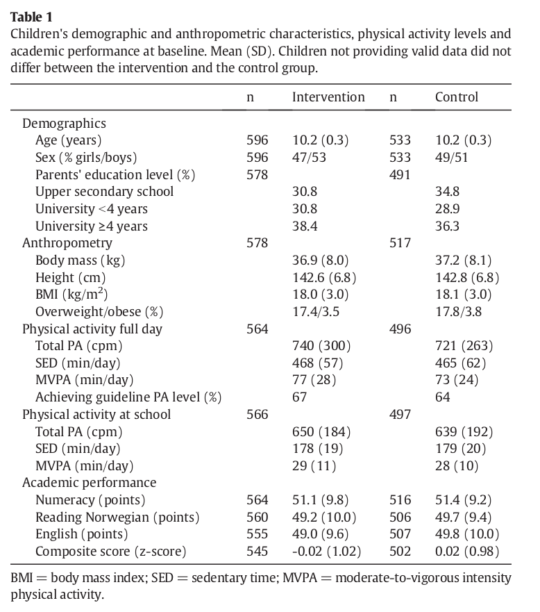
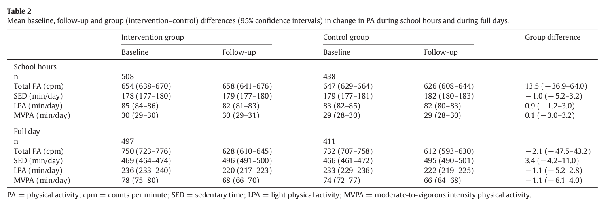

|

../../cm-ucl/corpus-oa-pmr-v02/10.1016_j.ypmed.2016.09.005/tables/table1/table.png
|
|
n |
Intervention |
n |
Control |
| Demographics |
|
|
|
|
| Age (years) |
596 |
10.2 (0.3) |
533 |
10.2 (0.3) |
| Sex (% girls/boys) |
596 |
47/53 |
533 |
49/51 |
| Parents' education level (%) |
578 |
|
491 |
|
| Upper secondary school |
|
30.8 |
|
34.8 |
| University b4 years |
|
30.8 |
|
28.9 |
| University ≥4 years |
|
38.4 |
|
36.3 |
| Anthropometry |
578 |
|
517 |
|
| Body mass (kg) |
|
36.9 (8.0) |
|
37.2 (8.1) |
| Height (cm) |
|
142.6 (6.8) |
|
142.8 (6.8) |
| BMI (kg/m )^{2} |
|
18.0 (3.0) |
|
18.1 (3.0) |
| Overweight/obese (%) |
|
17.4/3.5 |
|
17.8/3.8 |
| Physical activity full day |
564 |
|
496 |
|
| Total PA (cpm) |
|
740 (300) |
|
721 (263) |
| SED (min/day) |
|
468 (57) |
|
465 (62) |
| MVPA (min/day) |
|
77 (28) |
|
73 (24) |
| Achieving guideline PA level (%) |
|
67 |
|
64 |
| Physical activity at school |
566 |
|
497 |
|
| Total PA (cpm) |
|
650 (184) |
|
639 (192) |
| SED (min/day) |
|
178 (19) |
|
179 (20) |
| MVPA (min/day) |
|
29 (11) |
|
28 (10) |
| Academic performance |
|
|
|
|
| Numeracy (points) |
564 |
51.1 (9.8) |
516 |
51.4 (9.2) |
| Reading Norwegian (points) |
560 |
49.2 (10.0) |
506 |
49.7 (9.4) |
| English (points) |
555 |
49.0 (9.6) |
507 |
49.8 (10.0) |
| Composite score (z-score) |
545 |
-0.02 (1.02) |
502 |
0.02 (0.98) |
../../cm-ucl/corpus-oa-pmr-v02/10.1016_j.ypmed.2016.09.005/tables/table1/table.svg.html
|
|

../../cm-ucl/corpus-oa-pmr-v02/10.1016_j.ypmed.2016.09.005/tables/table2/table.png
|
|
Baseline |
Follow-up |
Baseline |
Follow-up |
Group difference |
| School hours |
|
|
|
|
|
| n |
508 |
|
438 |
|
|
| Total PA (cpm) |
654 (638–670) |
658 (641–676) |
647 (629–664) |
626 (608–644) |
13.5 (− 36.9–64.0) |
| SED (min/day) |
178 (177–180) |
179 (177–180) |
179 (177–181) |
182 (180–183) |
− 1.0 (− 5.2–3.2) |
| LPA (min/day) |
85 (84–86) |
82 (81–83) |
83 (82–85) |
82 (80–83) |
0.9 (− 1.2–3.0) |
| MVPA (min/day) |
30 (29–30) |
30 (29–31) |
29 (28–30) |
29 (28–30) |
0.1 (− 3.0–3.2) |
| Full day |
|
|
|
|
|
| n |
497 |
|
411 |
|
|
| Total PA (cpm) |
750 (723–776) |
628 (610–645) |
732 (707–758) |
612 (593–630) |
− 2.1 (− 47.5–43.2) |
| SED (min/day) |
469 (464–474) |
496 (491–500) |
466 (461–472) |
495 (490–501) |
3.4 (− 4.2–11.0) |
| LPA (min/day) |
236 (233–240) |
220 (217–223) |
233 (229–236) |
222 (219–225) |
− 1.1 (− 5.2–2.8) |
| MVPA (min/day) |
78 (75–80) |
68 (66–70) |
74 (72–77) |
66 (64–68) |
− 1.1 (− 6.1–4.0) |
../../cm-ucl/corpus-oa-pmr-v02/10.1016_j.ypmed.2016.09.005/tables/table2/table.svg.html
|

../../cm-ucl/corpus-oa-pmr-v02/10.1016_j.ypmed.2016.09.005/tables/table3/table.png
|
|
n |
Group difference (95% CI) |
p |
ICC |
| Numeracy |
822 |
0.18 (− 1.09–1.45) |
0.777 |
0.07 |
| Reading Norwegian |
805 |
− 0.30 (− 1.54–0.94) |
0.626 |
0.04 |
| English |
821 |
1.39 (0.08–2.70) |
0.039 |
0.05 |
| Composite score |
767 |
0.05 (− 0.07–0.16) |
0.415 |
0.09 |
../../cm-ucl/corpus-oa-pmr-v02/10.1016_j.ypmed.2016.09.005/tables/table3/table.svg.html
|